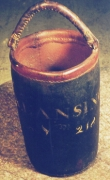

|
Firemasters were appointed each year by the Albany city council (usually in early November after the annual Charter elections that were held on September 29). Two firemasters were named for each of the city’s three wards. Most of these native sons (and some newcomers as well) served a year or two during the time immediately preceding their marriage and establishment as full-fledged members of the community. They were empowered to visit each home in their ward and to seek out and report fire hazards.  Accompanied by an alderman or assistant, these inspections were to be held every three weeks. Such responsibility introduced an emerging adult to Albany householders, gave them a common useful experience, and helped young men to appreciate and feel part of the community. Firemasters were charged with knowing how many "leathers" or fire buckets were available, for taking charge of the common fire ladders and hooks, and for guiding and leading their neighbors during an actual fire. The vital role played by the firemasters typified the voluntary and participatory nature of municipal government during the pre-industrial era. By the second half of the eighteenth century, the actual but rarely reported complete roster of firemasters or "firemen" was quite large and represented a significant proportion of the young men of the community. In July 1763, the city records posted a list of Albany's thirty-one firemen arranged by ward. The printed laws and ordinances of the city published in 1771 provided a detailed description of Albany's then current fire prevention and response program. After the Revolution, municipal fire protection evolved into "fire companies" with individual residents serving as "firemen." The term "firemaster" then fell into disuse! Since notice of the annual appointment
of firemasters and later of firemen was entered into the common
council minutes, we have extracted that information and have made it
a part of each early Albany person's biographical
record. In 1791, lists of fireman in fire companies were entered
into the city records.
first posted: 1999; last revised 4/6/11 |